Rusia llegó hoy a la conclusión de que no hay conclusiones definitivas sobre el naufragio del submarino nuclear " Kursk " , pero se aferró sin pruebas a su tesis sobre la colisión con otro buque extranjero.
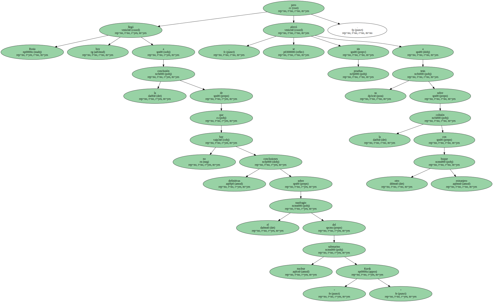En un anuncio sorprendente , la comisión que ha investigado las causas del hundimiento del " Kursk " el pasado 12 de agosto en aguas árticas del mar de Bárents reconoció que " hasta ahora " no se han hallado pruebas de la colisión , pero mantuvo abierta la hipótesis.
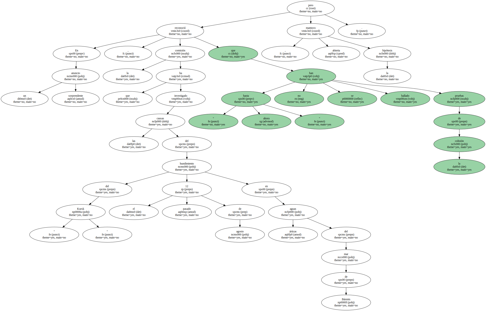Iliá Klebánov , viceprimer ministro y presidente de la comisión gubernamental , anunció sus conclusiones finales tras dos meses de trabajo en torno al naufragio y a la muerte de sus 118 tripulantes , la mayor catástrofe en la historia de la Armada rusa.
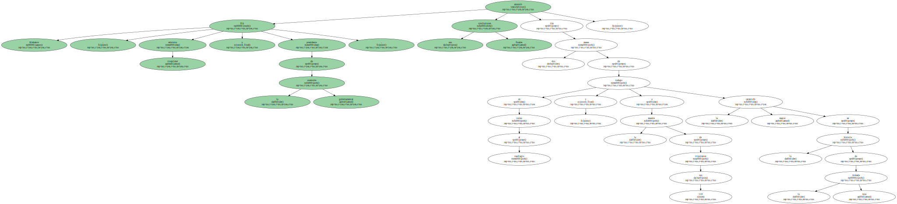Pero tras cuatro horas de reunión en la sede de la empresa Rubin , que diseñó el submarino , la principal conclusión de la comisión fue que no hay conclusiones definitivas.
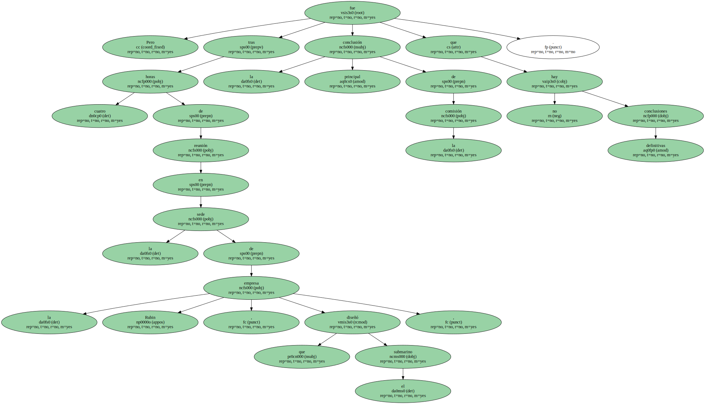Klebánov dijo en una rueda de prensa que siguen vigentes hasta tres posibles hipótesis : " una situación anormal dentro del submarino " , una " colisión con otro buque " o un " impacto con una mina de la II Guerra Mundial ".
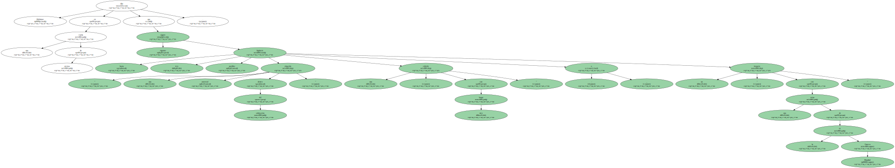El viceprimer ministro afirmó que " ninguna de las tres versiones es más verosímil que la otra " , aunque así descartó aparentemente hasta diez hipótesis más barajadas por la comisión , entre ellas el disparo de un torpedo por error de un buque ruso y un sabotaje.
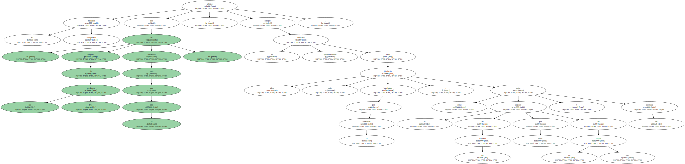" Por ahora no se han encontrado fragmentos de un submarino extranjero " en las inmediaciones del lugar donde reposa el " Kursk " a 108 metros de profundidad en aguas árticas del mar de Bárents , dijo.
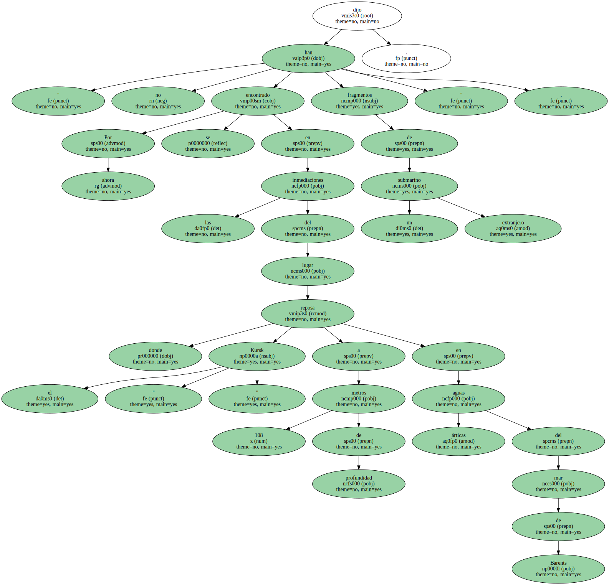Tras la tragedia , que provocó preocupación internacional por el retraso de las autoridades rusas en intentar el rescate de los tripulantes y por el secretismo inicial , Moscú proclamó que un submarino británico o norteamericano chocó con el " Kursk ".
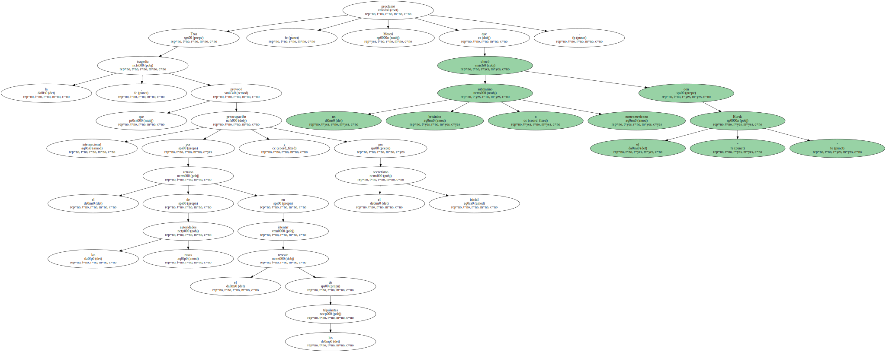Londres y Washington rechazaron tal posibilidad y declararon que , según los datos recogidos por sismógrafos y otros sensores , hubo dos explosiones a bordo del submarino nuclear ruso , joya de la Armada.
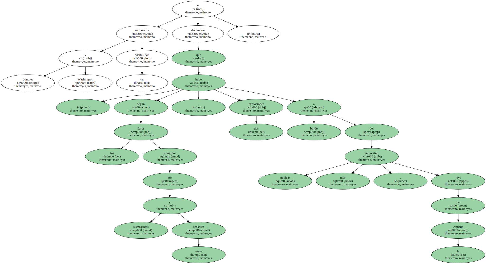De acuerdo con los registros de sismógrafos noruegos , hubo dos explosiones consecutivas a bordo del " Kursk " que lo echaron a pique tras causar graves destrozos en su proa.
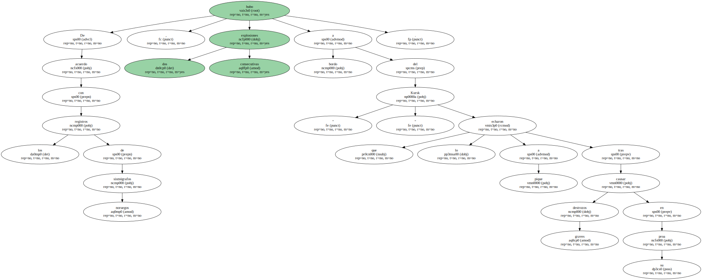Ninguno de los 118 tripulantes sobrevivió a la tragedia , y la semana próxima está previsto el comienzo de una operación para rescatar los cadáveres.
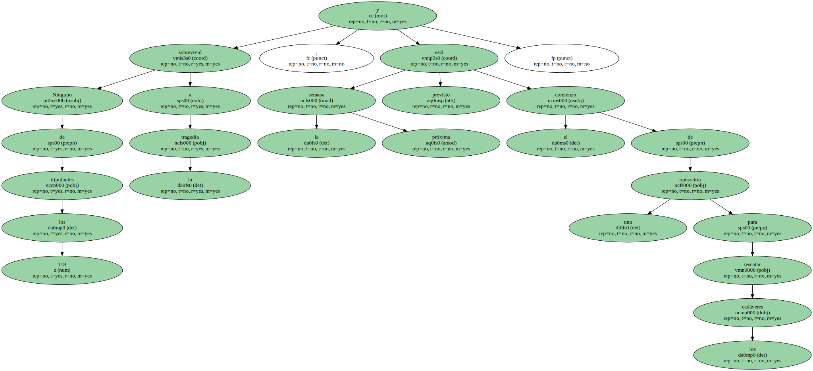Pero en la línea avanzada desde hace tiempo por el Gobierno y la Armada rusa ante el posible fracaso de la operación , Klebánov manifestó hoy que " no puedo garantizar el éxito al cien por cien ".
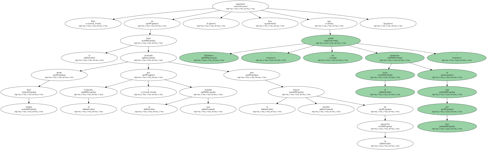Klebánov declaró hace dos días que hoy se conocería la causa del naufragio , atribuida desde el principio a un " factor externo " , en concreto una colisión con otro submarino extranjero.
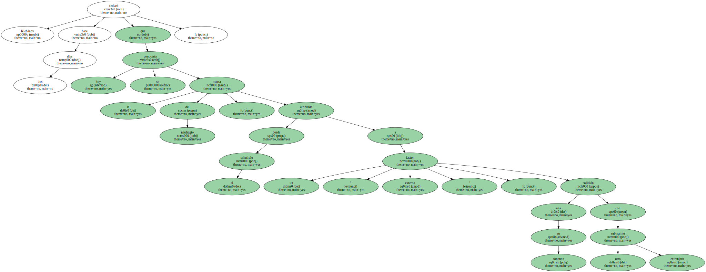El almirante Vladímir Kuroyédov , comandante de la Armada rusa , dijo antes de la reunión que aunque la hipótesis de la colisión era la más probable , la comisión analizaba " tres versiones " más.
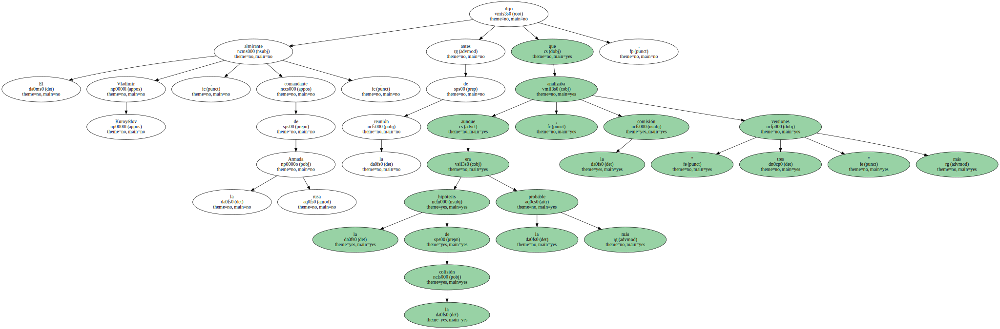Entre las trece posibilidades avanzadas en estos meses por el Gobierno y la Armada se incluían un accidente fortuito , una negligencia y un posible sabotaje que en su día se atribuyeron los separatistas chechenes.

Pero altos responsables del Gobierno y la Armada se cerraron con tenacidad siempre a la teoría de la colisión con otro sumergible , pese a que los sensores de la empresa noruega " Norsar " registraron dos explosiones consecutivas en el lugar donde el " Kursk " participaba en las maniobras navales.
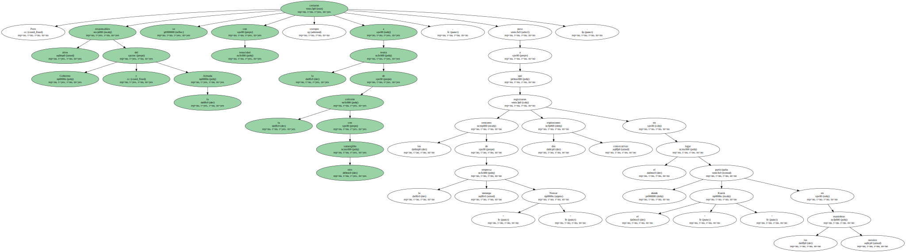La primera explosión se produjo a las 07.28.27 GMT y la segunda , mucho más potente , a las 07.30.42 GMT.
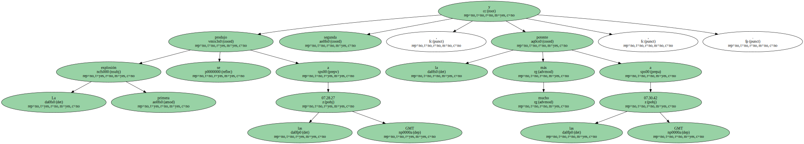EEUU informó de que dos de sus submarinos seguían las maniobras navales rusas a centenares de millas de distancia y también detectaron las explosiones.
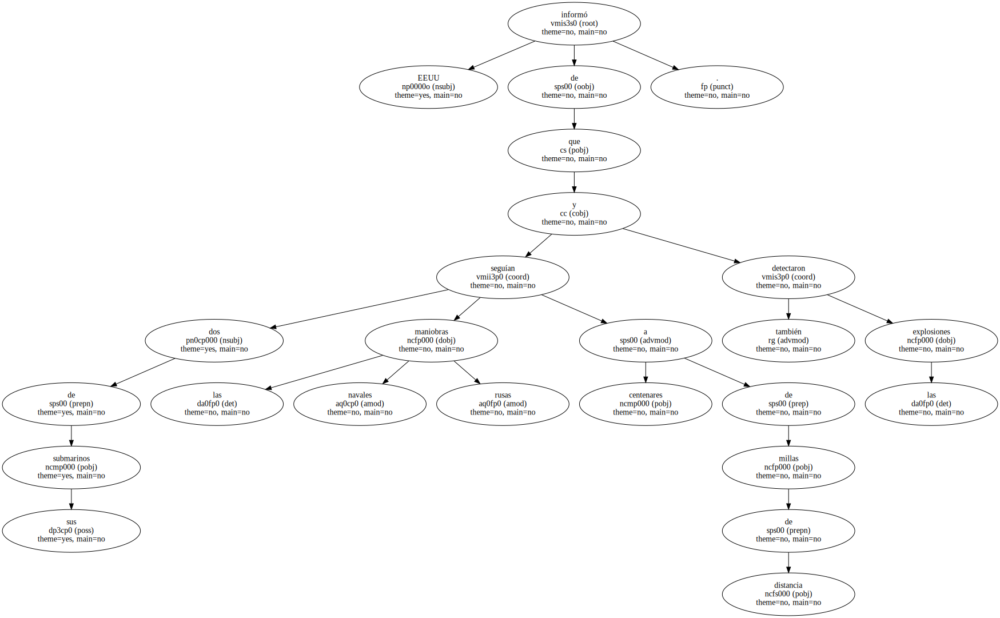Grabaciones de vídeo durante los polémicos trabajos de salvamento de la tripulación mostraron un gran boquete en el primer compartimento del " Kursk ".
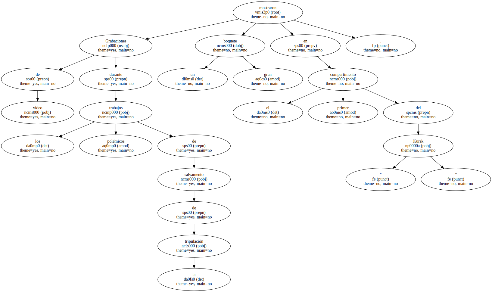Siete marinos , entre ellos tres daguestaníes cuya región es vecina de Chechenia , estaban en ese compartimento , destinado a alojar los torpedos del " Kursk ".
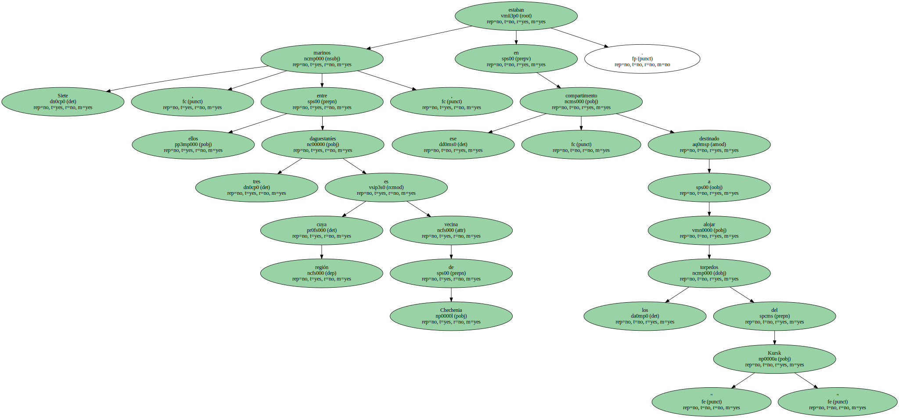En la reunión de hoy de la comisión , sus miembros examinaron toda la documentación material , técnica y gráfica recogida los últimos días por el buque científico " Akademik Mstislav Keldish " en el lugar del accidente.
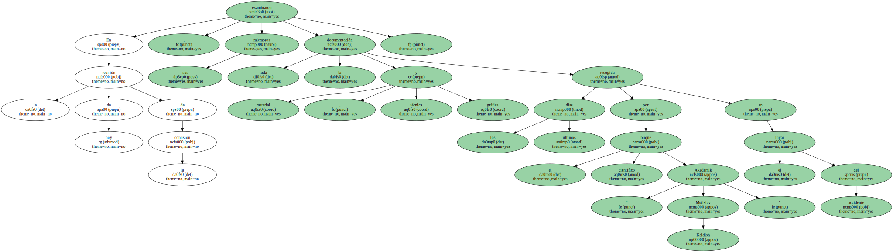Tras las inmersiones del batiscafo " Mir " , los responsables de la Armada dijeron que el rescate de los cadáveres de los tripulantes será " muy complicado ".
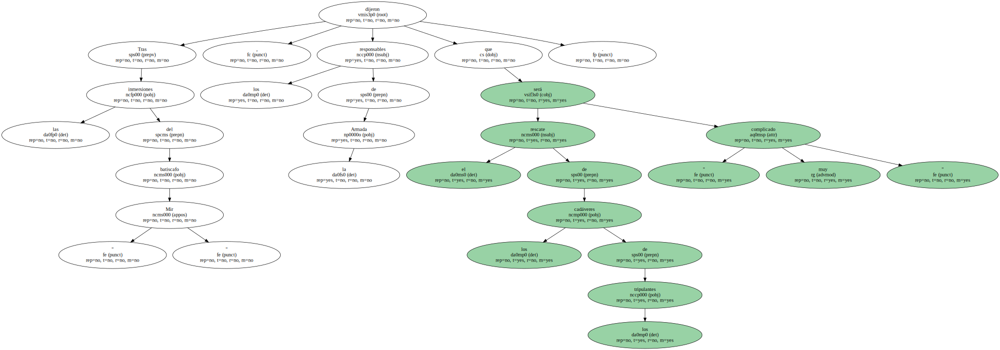Moscú ha firmado un contrato con la filial noruega de la empresa norteamericana Halliburton para intentar el rescate , aunque altos mandos de la Armada creen que en todo caso sólo podrá recuperarse entre el 20 y el 30 por ciento de los cuerpos.
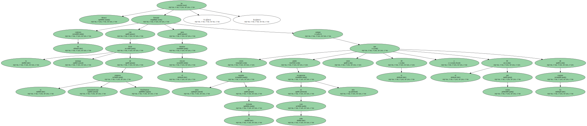El comandante de la Armada rusa , almirante Vladímir Kuroyédov , se mostró contrario a la operación de rescate de los cadáveres y abogó más bien por el intento de izar el " Kursk " entero.
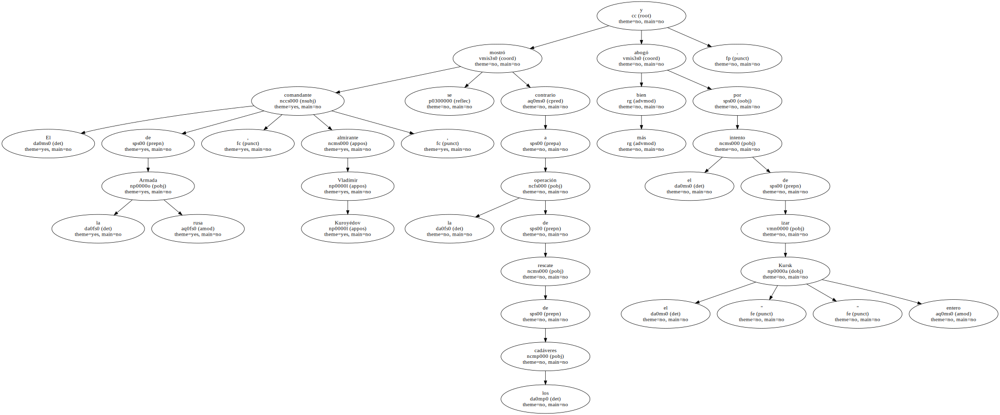" Puesto que Dios , el Destino y la Naturaleza han decidido la suerte de esos marinos , ¿ no será una blasfemia llevar adelante la operación de rescate ? " , manifestó.
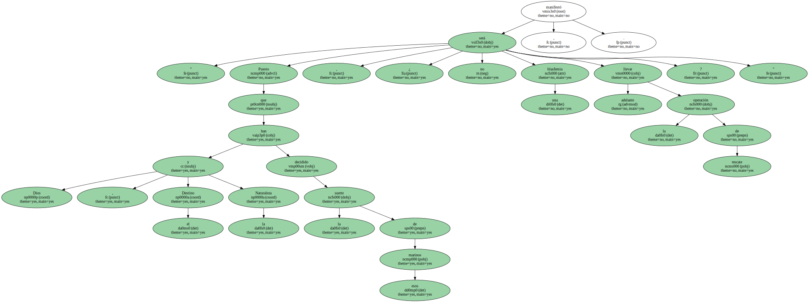Kuroyédov anunció que al menos 78 familiares de los tripulantes del " Kursk " han firmado una petición oficial para subir los cuerpos junto con el submarino en su momento porque ahora hay " muy pocas posibilidades " de éxito.

La plataforma semisumergible " Regalia " de Halliburton , que navega desde el pasado día 9 en dirección al lugar del naufragio , tiene previsto iniciar sus trabajos el 19 o el 20 de octubre.
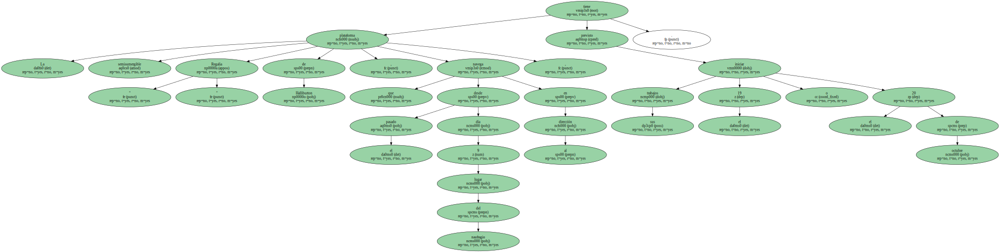